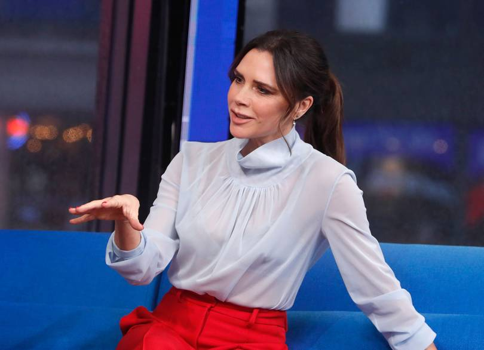

Edward Enninful And Naomi Campbell Join 14 New Industry Experts On The 2019 LVMH Prize Jury
In just two weeks, the autumn/winter 2019 ready-to-wear season will officially begin in New
York – but if you’ve been paying attention, you know fashion week is always happening
somewhere. In the next couple of months alone, Vogue will cover shows in Copenhagen,
Stockholm, Madrid, and Tbilisi in addition to the “main” circuit. In our increasingly
digital world, it’s never been easier for a designer to get noticed, regardless of where
they are in the world. The LVMH Prize is a consistent reminder of that; the pool of talent
seems to become more global by the year. In 2018, for instance, executive vice president of
Louis Vuitton and founder of the LVMH Prize, Delphine Arnault, revealed they got a record
number of applications from Asia, particularly China. “The Prize is international, and so
is fashion,” she tells Vogue.

Victoria Beckham On Why She'll Remain A Spice Girl For Life
Time and time again, Victoria Beckham says that she will not take on her former Posh persona
and join Baby, Scary, Sporty and Ginger on tour with the Spice Girls. But, time and time
again, the media can’t help but ask the popstar-turned-designer whether she has had a
change of heart and might consider dusting off her little black dresses in the name of girl
power.
Riccardo Tisci Calls Upon 6 Photographers For His Burberry Campaign Debut
COURTESY OF BURBERRY
Riccardo Tisci’s first Burberry campaign has landed with a bang, and the reinstated promise
that, under his leadership the house is celebrating “a new aesthetic, a new era.” The
overarching theme of Burberry’s bright new dawn is inclusivity, so when plotting out his
first campaign as chief creative officer, Tisci called on a series of collaborators to help
interpret the brand's heritage and his own vision.
“The thing that excites me the most about Burberry is how inclusive it is – it appeals to
everyone no matter their age, their social standing, their race, their gender,” Tisci said
in a statement announcing the spring/summer 2019 campaign. “I pulled together six
photographers, all with a very different energy, experience and point of view of the world
– including British masters of photography and the next generation who have something new
to say – to interpret this new Burberry era and the multigenerational men and women we
speak to, all through their own unique eyes.”
Riccardo Tisci Calls Upon 6 Photographers For His Burberry Campaign Debut
COURTESY OF BURBERRY
Riccardo Tisci’s first Burberry campaign has landed with a bang, and the reinstated promise
that, under his leadership the house is celebrating “a new aesthetic, a new era.” The
overarching theme of Burberry’s bright new dawn is inclusivity, so when plotting out his
first campaign as chief creative officer, Tisci called on a series of collaborators to help
interpret the brand's heritage and his own vision.
“The thing that excites me the most about Burberry is how inclusive it is – it appeals to
everyone no matter their age, their social standing, their race, their gender,” Tisci said
in a statement announcing the spring/summer 2019 campaign. “I pulled together six
photographers, all with a very different energy, experience and point of view of the world
– including British masters of photography and the next generation who have something new
to say – to interpret this new Burberry era and the multigenerational men and women we
speak to, all through their own unique eyes.”
Victoria Beckham On Why She'll Remain A Spice Girl For Life
Time and time again, Victoria Beckham says that she will not take on her former Posh persona
and join Baby, Scary, Sporty and Ginger on tour with the Spice Girls. But, time and time
again, the media can’t help but ask the popstar-turned-designer whether she has had a
change of heart and might consider dusting off her little black dresses in the name of girl
power.